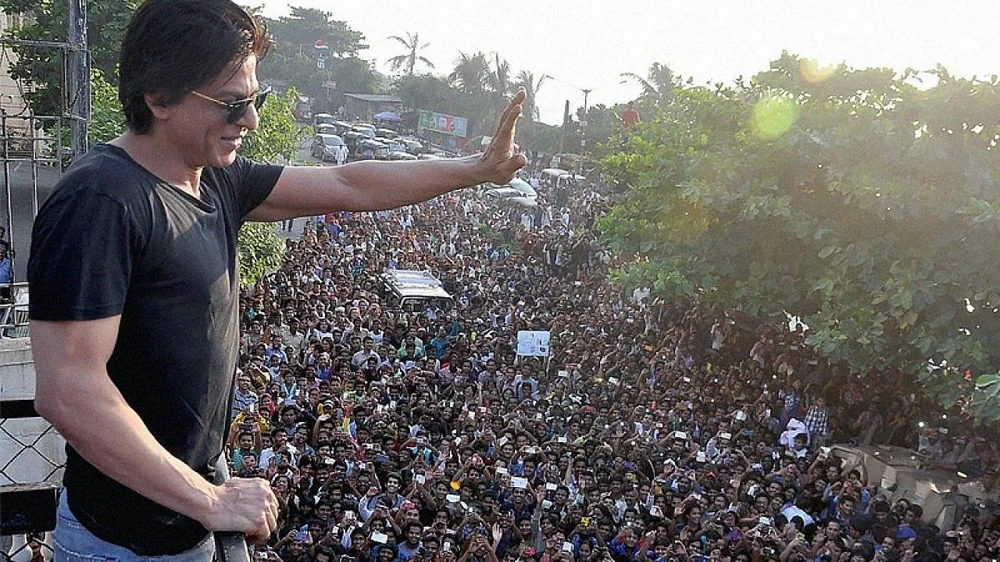
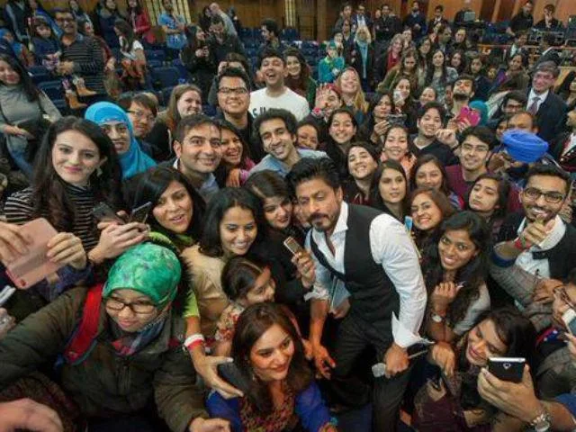

The Final Thesis · section 64 of 92
PART VI — THE FAN ECONOMY
10. The kingdom organises itself



6
A celebrity's audience is not a single, undifferentiated mass.
It includes fan clubs, informal online communities, local organisers, collectors, artists, editors, writers, meme creators, filmmakers, merchandise buyers and people who simply watch the films.
Some fan communities operate independently. Others participate in official events or promotions. Their motivations, resources and relationships with the celebrity differ.
The rise of organised fan activity is therefore a subject in its own right.
It is also where the original marketing question becomes a technology question.
What would happen if a fan's relationship with a film extended beyond watching and sharing?
What if a fan could create an original story, enter a competition, organise a screening, build a community, produce a game or contribute an authorised piece of merchandise?
What if participation could be measured transparently while preserving the fan's creative rights?
These are the questions behind the proposed SRKWORLD concept.
11. SRKWORLD: From audience to participatory franchise
Proposed model · Not an official SRK project